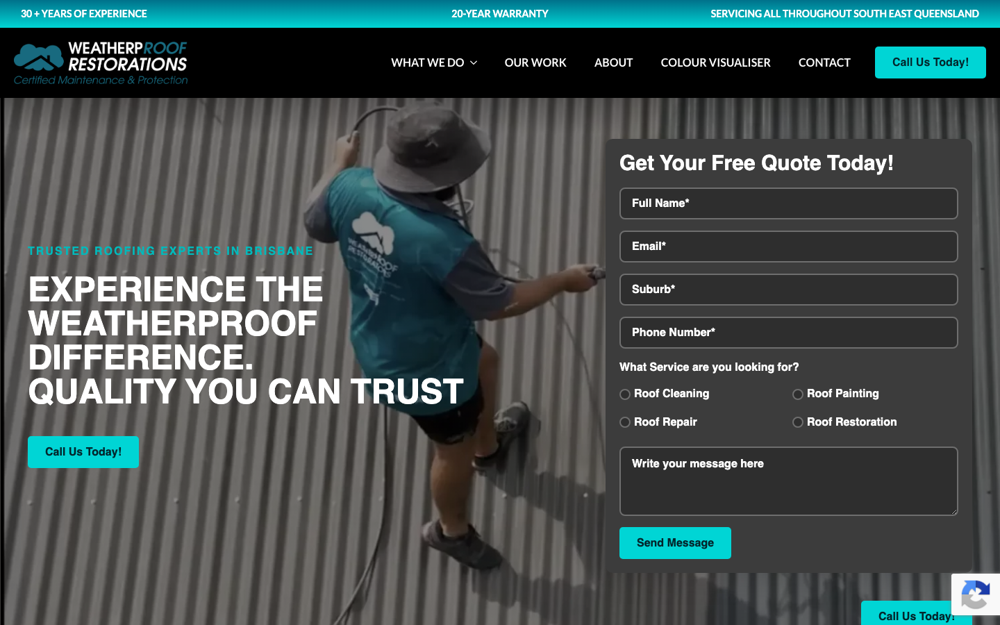
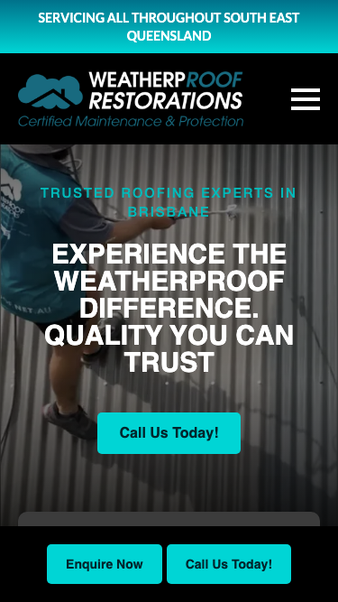

61/100 · moderate_candidate · 行业：roofing · 地区：Brisbane · Google 评价：4.9★ （134 条）
投入分级： B 预览试探 — ChatGPT 生成
mockup hero 图 + 短邮件试反应
触发依据： - moderate_candidate + 134 评论 + audit 61（仍有改进空间）
产品档位： T3 多页站 + 月度运营包
建议报价： 一次性 $5-8K + 月度 $800-1500/月（社媒 + 内容 + GEO）
下一步行动： 用 ChatGPT Image / Gemini Imagen 生成 hero mockup 预览图 + master.md PDF + 1 封 personalized 邮件试探 + 1 次跟进。回应后升级到 A 档处理。
审计结论： audit_score=61 → moderate_candidate · weakest: seo 34, visual 50 · fired: high_traction_old_site · 1 critical issues
已触发的 hard triggers：
high_traction_old_site
independent_https_site

The site has a functional layout but relies on a dated dark-grey aesthetic and a low-contrast hero image that obscures the brand’s value proposition.
新鲜度 4/10 · 信任度 5/10 ·
转化准备度 6/10 · 设计年代
slightly_outdated
值得保留的优点： - The ‘30+ Years of Experience’ and ‘20-Year Warranty’ are strong trust signals that should be kept. - The form fields are clearly labeled (Name, Email, Suburb), which is good for usability. - The brand color (teal) is distinct and appropriate for a trade business.
Customers overwhelmingly praise the business for its honesty, professionalism, and clear communication, particularly valuing transparent assessments that avoid unnecessary upsells. A single severe complaint regarding poor workmanship and communication exists, but it appears to be an outlier against a backdrop of consistent high satisfaction.
一致夸赞： honest assessments ·
excellent communication ·
professional workmanship · punctual service ·
fair pricing
抱怨 / 短板： poor communication ·
substandard workmanship · unreliability
可直接放上 redesign 后网站的 quote：
“Weatherproof Restoration was the only one that responded… I really appreciated his honesty and professionalism.” — Joe, ★★★★★
放哪：Hero section proof of integrity and responsiveness
“Great response and quick resolution to a minor concern we raised - sign of a quality, trustworthy business.” — Sam, ★★★★★
放哪：Trust section highlighting after-care and reliability
“From my first contact with them to my last contact they were very friendly, kept up communication.” — Julian, ★★★★★
放哪：Process section emphasizing customer experience
技术事实
phone hidden below fold or missing
普通话翻译
电话号码在第一屏看不到 — 客户必须滚动才能找到怎么联系你。
对客户的影响
本地服务客户 60-70% 倾向打电话沟通（不是填表单）。电话号没在第一屏 = 这部分客户里很多人会直接关掉去搜下一家。这是最便宜的转化优化之一。
技术事实
The main background image shows a worker on a roof but is heavily desaturated and darkened, making the scene look gloomy and the worker’s face unrecognizable.
普通话翻译
主页背景图太暗、太灰，看起来像旧照片，让人看不清工人和屋顶的细节。
对客户的影响
访客在 8 秒内就会判断网站是否专业。昏暗的图片会让访客觉得公司设备陈旧或不正规，导致他们直接关闭页面去找竞争对手。
正确长啥样
A bright, high-resolution photo of a clean, finished roof or a smiling worker in high-vis gear, with a subtle semi-transparent overlay so text pops without hiding the image.
Redesign 怎么改
Replace the current hero image with a bright, high-quality photo of a completed roof restoration. Apply a 10-20% dark overlay only to ensure text readability, keeping the image vibrant.
技术事实
title=‘# EXPERIENCE THE WEATHERPROOF DIFFERENCE. QUALITY YOU CAN TR’ contains-name=true contains-niche=false
普通话翻译
你网站的浏览器标签 title 没把业务名字 + 服务关键词写清楚（比如该写「WeatherpRoof Restorations - roofing Brisbane」，但目前是泛泛一句）。
对客户的影响
Google 搜索结果里展示的就是这个 title。写不清楚 = 排名靠后 + 即使排上来客户也不知道是不是匹配的服务。SEO 最便宜的修复，但很多本地企业完全没做。
技术事实
no LocalBusiness JSON-LD
普通话翻译
网站没有 LocalBusiness JSON-LD 结构化数据（让 Google / AI 知道你是本地企业、地址、电话、营业时间的标准格式）。
对客户的影响
Google「附近的服务」「Knowledge Panel」「AI Overview」都依赖这类结构化数据。没有 = 即使排名上去也不会出现在右侧 Knowledge Panel 或地图卡片里 — 错失高转化的展示位。AI agent / ChatGPT 引用本地商家时也是基于这些数据。
技术事实
The ‘Get Your Free Quote’ form is a large, solid dark grey box with thin white borders. It dominates the right side of the screen and feels heavy and intimidating.
普通话翻译
右侧的报价表格是一个巨大的深灰色方块，看起来沉重且难以阅读，让人不想填写。
对客户的影响
复杂的视觉设计会增加用户的心理负担。如果表格看起来很难填，访客可能会放弃询价，导致潜在客户流失。
正确长啥样
A clean, white or light-grey form with distinct, high-contrast input fields. The ‘Send Message’ button should be the most colorful element on the page.
Redesign 怎么改
Change the form background to white or very light grey. Add subtle drop shadows to input fields to make them look clickable. Ensure the ‘Send’ button uses the brand’s bright teal color to stand out.
技术事实
The very top strip (above the logo) is a bright teal bar with white text listing ‘30+ Years’, ‘Warranty’, etc. It competes for attention with the main navigation below it.
普通话翻译
顶部的亮色条幅和下面的导航栏颜色太接近，导致页面顶部看起来很乱，分散了注意力。
对客户的影响
视觉混乱会让访客感到困惑，不知道该看哪里。这降低了网站的专业感，可能让急需屋顶维修的访客失去耐心。
正确长啥样
Remove the top bar entirely or integrate those trust signals (Warranty, Experience) into the hero section as small icons/badges next to the headline.
Redesign 怎么改
Remove the teal top bar. Move the ‘30+ Years’ and ‘Warranty’ text into the main hero section as small, clean icons with text to the left of the main headline.
我们前面那段「慢速 4G 加载视频」是我们这边的实验室结果。这一段是 Google 自己对你网站打的分，包括过去 28 天 真实访客的网络体验数据（CRUX field data）。
Lighthouse 分数（实验室）：
| 维度 | 分数 |
|---|---|
| 性能 (Performance) | 99/100 |
| 可访问性 (Accessibility) | 88/100 |
| 最佳实践 (Best Practices) | 96/100 |
| SEO | 85/100 |
Lab 关键指标： LCP 2.0s · FCP
1.4s · CLS 0.002 · TBT 0ms
Google 建议的优化项（按节省时间排序，前 1）：
Lighthouse 分数： Performance 99 · A11y 88 · Best Practices 96 · SEO 85
客户最常担心的问题：「我重做网站，会不会丢掉 Google 排名？」这一段直接回答。
https://weatherproof.net.au/sitemap_index.xml页面分类：
| 类型 | 数量 |
|---|---|
| 顶层页面 | 27 |
| 内页 | 4 |
| 首页 | 1 |
| Blog 文章 | 1 |
| 关于 / 团队 | 1 |
| 联系 / 报价 | 1 |
Sitemap lastmod 跨度： 最旧 2025-06-10 → 最新 2025-12-02
Redirect 计划承诺： redesign 上线时我们会附一份 35 条 1:1 redirect 表（旧 URL → 新 URL），保证 Google 已经索引的页面权重无损迁移。已经在 Google 第一二页的关键词不会丢。
客户能不能 方便地 把信息留下来 =
直接的转化路径。这一段审视所有 <form> 元素的可用性 +
防 spam 配置。
已部署的人机验证： - reCAPTCHA v2 (visible “I’m not a robot”) — 高摩擦 - reCAPTCHA v3 (invisible) — 低摩擦
Audit 总结：
quarantine）strong (SPF + DKIM
+ DMARC 齐全)从网站源码识别出来的工具，能帮我们判断这位客户的数字成熟度。
数字成熟度打分： 4 / 6 （高 — 客户懂数字营销，redesign 谈预算时不必从零教育）
客户可能有数月 / 数年的历史数据 + 广告投放受众 sit 在这些 ID 上面。重做时必须用同一套 ID 重新接进新网站，否则等于清零所有累积。
我们 redesign 交付清单会把这些列为「必须 setup 项」。
GEO = Generative Engine Optimization。ChatGPT、Perplexity、Google AI Overviews 这些 AI 搜索产品不像传统搜索引擎那样按”关键词排名”工作，它们直接抓取结构化数据并把答案合成给用户。如果你的网站在 AI 抓取这一块做得不到位，等于在生成式搜索时代隐身。
AI 可发现性总分： 30 / 100 — AI agent / ChatGPT 几乎无法准确引用此网站 — 在生成式搜索时代等于隐身
breadcrumb_schema — BreadcrumbList JSON-LD
presenteeat_business_credentials — 2/4 credentials in
copy: license/QBCC, years-in-businesseeat_warranty_trust — warranty/guarantee
mentionedjsonld_at_least_one — 3 JSON-LD block(s)
detected on pagellms_txt_present (5 分) — no /llms.txt at
standard pathai_bot_robots_policy (5 分) — robots.txt has no
explicit policy for AI crawlers (GPTBot/ClaudeBot/etc)localbusiness_schema (15 分) — no LocalBusiness
or Organization JSON-LDservice_schema (10 分) — no Service JSON-LDfaqpage_schema (10 分) — no FAQPage JSON-LD
(loses AI Overview / featured snippet eligibility)aggregaterating_schema (5 分) — no
AggregateRating JSON-LD (★ rating not shown in search snippets)semantic_landmarks (10 分) — 3 semantic
landmarks present: <nav, <header, <sectionfaq_qa_pattern (10 分) — 0 question-style
heading(s) found (Q&A format helps AI extraction)销售切入： 「ChatGPT 现在每月 30 亿次搜索，本地服务用户问『Brisbane 哪家屋顶公司靠谱』，AI 回答时只引用结构化数据完整的网站。你目前在这个新阵地的得分是 30/100。」
注：这一段只给运营内部看，不进入客户报告。 用来判断这个 lead 是不是匹配我们「小网站 / 多批量 / 快上线」的产品定位。
mid —
中型客户，可接但价格要往上提（基础包 + 配置项）触发依据： - Google 评价 134 条（≥50，有规模基础） - 网站页面数 35（≥30，中小规模） - 已部署 5 个分析 / pixel 工具（高数字成熟度）
redesign 是一次性收入。以下是基于这个客户当前现状自动识别的持续性服务包机会，可以在 redesign 提案签字时一并捆绑进去。
触发依据： 客户活跃度为「停滞（3-12 月没动）」，但 Google 上有 134 条 4.9★ 评价的口碑底子 — 有内容素材却没在用。
包内容： 每月 8-12 帖（FB / IG / LinkedIn 至少 2 平台）+ 4 条工程现场 reels/short videos + 月度 GBP 帖子 2 条 + 评论回复代运营。
月度费用区间： $800-1,500/月（视平台数量与内容深度）
销售切入： 「你 Google 上的 134 条好评是金矿，但你的 Facebook 已经 160 天没动过 — 这等于你把口碑资产堆在仓库里没拿去卖。我们月度包就是把这部分自动化跑起来。」
-2026-05-11-v1ollama-qwen3.6-27b-nothinkGoogle Places Place Details · most_relevant